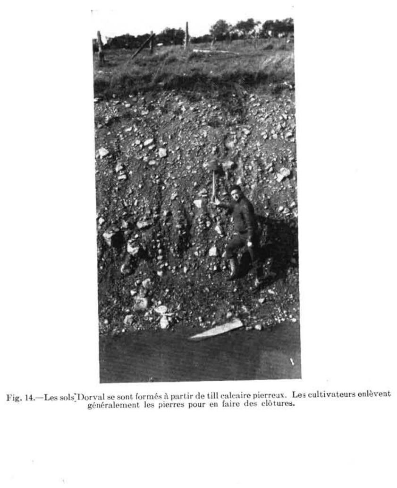

Identification & Caractéristiques Générales
La série de sols Dorval s'est développée sur un till morainique basal fortement calcaire, dérivé principalement des formations calcaires du Trenton et du Black River d'âge ordovicien. Ce matériau parental se compose d'une matrice meuble à dominante argilo-graveleuse, parsemée de fragments rocheux angulaires et de blocs tabulaires de calcaire gris. Sur le plan géomorphologique, ces sols occupent des positions topographiques variant de légèrement à modérément ondulées, incluant de petites collines résiduelles et des terrasses morainiques généralement situées à de faibles altitudes, notamment dans la région métropolitaine de Montréal et les basses-terres du Saint-Laurent adjacentes.
Le profil morphologique se caractérise par une texture de surface généralement franche argileuse ou franche argilo-graveleuse, surmontant un sous-sol plus lourd à teneur élevée en argile et en éléments grossiers. Le drainage externe est modéré à rapide, tandis que la percolation interne à travers le solum s'avère lente en raison de la compacité et de la texture fine du substrat. Malgré cette conductivité hydraulique restreinte en profondeur, la capacité de rétention en eau globale demeure élevée. La réaction du sol est alcaline, le till parent réagissant vigoureusement au carbonate de calcium, ce qui confère au profil un pH naturellement élevé et exclut les espèces végétales acidophiles.
Sur le plan agronomique, les sols Dorval sont mis en valeur dans le cadre de la grande culture, des productions fourragères et de l'industrie laitière. Leur richesse en calcium et leur pH neutre à alcalin procurent un milieu optimal pour l'implantation et la pérennité des légumineuses pérennes, en particulier la luzerne. Les limitations inhérentes à l'exploitation de cette série incluent la présence de pierrosité en surface et dans le profil nécessitant des épierrages périodiques, ainsi qu'un risque d'érosion hydrique sur les pentes plus marquées lors de la culture de plantes sarclées. La régie agronomique ne requiert pas de chaulage, mais exige une gestion adéquate du travail du sol et du drainage de surface pour atténuer les contraintes liées à la battance et à la lenteur relative de l'infiltration sous-jacente.
Classification Taxonomique & Environnement Pédologique
| Ordre Pédologique | Brunisolique |
|---|---|
| Grand Groupe (SCSS) | Brunisol mélanique |
| Sous-Groupe Taxonomique | Brunisol mélanique orthique |
| Famille Pédologique | Loameuse-fine, mixte sableux, alcalin (calcaire) |
| Mode de Dépôt Parental | Morainique |
| Classe de Drainage Naturel | Modérément bien drainé |
| Régime Thermique & Humidité | Doux / Subhumide |
Description Morphologique du Profil Type
Séquences génétiques des horizons pédologiques caractérisant le profil type représentatif de la série Dorval :
Profil forestier (sous boisé) — Comté de Argenteuil
✓ Source : Comté de Argenteuil — Page 40Couleur Munsell : Non précisée
Structure & Consistance : Moyennement granulaire
Description morphologique : Terre franche argileuse ou argile brun très foncé; structure moyennement granulaire; assez friable; contenant un peu de pierres et beaucoup de fragments de gravier; fait violemment effervescence mais peu longtemps; pH 7.8.
Couleur Munsell : Non précisée
Structure & Consistance : Granuleuse fine
Description morphologique : Terre franche argileuse ou argile brun grisâtre très foncé à brun foncé; structure granuleuse fine; passablement ferme; contient un peu de pierres et de gravier; effervescence violente de peu de durée; pH 7.8.
Couleur Munsell : Non précisée
Structure & Consistance : Très ferme à compacte
Description morphologique : Terre franche argileuse d'un brun grisâtre foncé; mélange de teintes brun grisâtre foncé et jauneâtre formant des marbrures peu contrastantes; structure très ferme à compacte; présence de petits fragments de graviers anguleux; effervescence violente mais de peu de durée; pH 7.8.
Couleur Munsell : Non précisée
Structure & Consistance : Polyédrique à granulaire
Description morphologique : Till de terre franche argilo-graveleuse; marbrures assez prononcées dont la couleur va du brun grisâtre au brun jaunâtre; de très ferme à compact; massif; effervescence violente; pH 7.9.
Profil cultivé (agricole) — Comté de L'assomption
✓ Source : Comté de L'assomption — Page 35Couleur Munsell : 10YR 2/2
Structure & Consistance : Granuleuse
Description morphologique : Loam argileux brun très foncé à brun grisâtre très foncé (10YR 2/2-3/2); petites pierres à chaux angulaires et fragments graveleux très nombreux; structure granuleuse; ferme; présence de carbonates de calcium; pH 7.4 à 7.8.
Couleur Munsell : 10YR 3/2
Structure & Consistance : Polyédrique à granulaire
Description morphologique : Loam argileux brun grisâtre très foncé à brun foncé (10YR 3/2-4/3); petites pierres angulaires et fragments graveleux; ferme; carbonates; pH 7.4 à 7.8.
Couleur Munsell : 10YR 4/3
Structure & Consistance : Cuboïde subangulaire
Description morphologique : Loam argileux brun grisâtre foncé et marbrures de faible contraste formées de brun foncé et de brun jaunâtre (10YR 4/3-5/3-4/5/2); structure cuboïde subangulaire; ferme à très ferme; fragments anguleux de gravier et de petites pierres; pH 7.6 à 7.8.
Couleur Munsell : 2.5Y 5/2 (matrice), 10YR 5/2 (marbrures)
Structure & Consistance : Polyédrique à granulaire
Description morphologique : Till de loam argileux, plus ou moins graveleux et pierreux, de couleur brun grisâtre (2.5Y 5/2-10YR 5/2); faibles marbrures; très ferme à compact; pH 7.7 à 7.9.
Profil cultivé (agricole) — Sols de l'île de Montréal
✓ Source : Sols de l'île de Montréal — Page 36Couleur Munsell : Non précisée
Structure & Consistance : Moyennement granulaire
Description morphologique : Terre franche argileuse ou argile brun très foncé à brun grisâtre très foncé (10yr2/2-3/2); structure moyennement granulaire; assez friable; contenant un peu de pierres et de gravier (7 p. 100); présence de carbonate de calcium libre; pH 7,8.
Couleur Munsell : Non précisée
Structure & Consistance : Granulaire fine
Description morphologique : Terre franche argileuse ou argile brun grisâtre très foncé à brun foncé (10yr3/2-4/3); structure granulaire fine; passablement ferme; contenant un peu de pierres et de gravier; carbonates libres; pH 7,8.
Couleur Munsell : 10YR 4/3
Structure & Consistance : Variant de nuciforme à fragmentaire et de consistance très ferme à compacte
Description morphologique : Terre franche argileuse brun grisâtre foncé; il y a mélange des teintes brun grisâtre foncé, brun foncé et brun jaunâtre (10yr 4/3-5/3-5/4-5/2); tachetures peu prononcées de dimensions moyennes; structure variant de nuciforme à fragmentaire et de consistance très ferme à compacte; présence de gravier et de nombreux cailloux anguleux; pH 7,8.
Couleur Munsell : 2.5YR 5/2
Structure & Consistance : Polyédrique à granulaire
Description morphologique : Till de terre franche argilo-graveleuse; tachetures assez prononcées de dimensions moyennes dont la couleur va du brun grisâtre au brun jaunâtre et au brun jaunâtre foncé (2.5yr 5/2-10yr5/4-4/4); de très ferme à compact; contient plusieurs petites pierres anguleuses; massif; pH 7,9.
Profils Photographiques & Planches de Terrain
Documents iconographiques, figures pédologiques et coupes de terrain documentées dans les mémoires d'inventaire pour de la série Dorval :

Propriétés Physico-Chimiques & Analyses de Laboratoire
| Horizon | Texture | pH (H₂O) | M.O. % | C.E.C. (meq/100g) | Sable % | Limon % | Argile % | Ca éch. | Mg éch. | K éch. | Cond. hydr. (cm/h) | Densité |
|---|---|---|---|---|---|---|---|---|---|---|---|---|
| 1 | Loam argileux | 7.3 | 4.25 | 25.7 | 37.0 | 35.0 | 28.0 | 21.73 | 0.71 | 0.21 | 2.39 | 1.43 |
| 2 | Loam argileux | 7.6 | 3.74 | 27.1 | 36.0 | 34.0 | 30.0 | 22.48 | 0.72 | 0.17 | 1.65 | 1.44 |
Particularités Régionales, Phases & Variantes Pédologiques
Déclinaisons régionales, faciès texturaux, phases d'érosion ou de pierrosité et variantes cartographiées par étude pour de la série Dorval :
| Étude Régionale | Symbole | Appellation / Phase / Variante | Différenciation avec la série type (Analyse pédologique) |
|---|---|---|---|
| Comté de Argenteuil | Do |
Dorval loam argileux | Modalité modale de référence (type de base de la série). |
| Comté de L'assomption | Do |
Dorval loam argileux | Conforme à la série type de référence (caractéristiques texturales et drainage identiques). |
| Les sols de l’Île de Montréal | Do |
Dorval loam argileux | Conforme à la série type de référence (caractéristiques texturales et drainage identiques). |
Dog |
Dorval loam argileux caillouteux | Conforme à la série type de référence (caractéristiques texturales et drainage identiques). | |
| Sols de l'île de Montréal | DOV |
SÉRIE DORVAL | Conforme à la série type de référence (caractéristiques texturales et drainage identiques). |
Distribution Pédo-Paysagère & Représentativité Cartographique (Couverture PPS 2026)
- Châteauguay loam argileux (CEG) — co-occurrente dans 27 polygone(s)
- Terrebonne loam argileux (TRB) — co-occurrente dans 18 polygone(s)
- Chicot loam sableux fin (CHC) — co-occurrente dans 6 polygone(s)
Aptitudes Agronomiques, Hydropédologie & Conservation des Sols
Indicateurs Hydropédologiques & Vulnérabilité à l'Érosion (BDHP 2026)
Interprétation BDHP : Potentiel de ruissellement modérément élevé. Faible taux d'infiltration, présence d'horizons ralentissant le drainage descendant.
Classement selon l'Inventaire des Terres du Canada (ITC / CLI) : Classe 1.
- Potentiel agricole : Terroir adapté aux cultures régionales selon la texture dominante et la régie de drainage.
- Contraintes majeures : Modérément bien drainé. Risque d'engorgement temporaire ou d'excès d'eau printanier.
- Gestion & Aménagement : Drainage souterrain ou superficiel préconisé sur les terres planes. Chaulage et apport organique régulier selon les bilans agronomiques.
- Cultures adaptées : Grandes cultures (maïs, soya, céréales), prairies fourragères et cultures maraîchères selon le contexte géomorphologique.